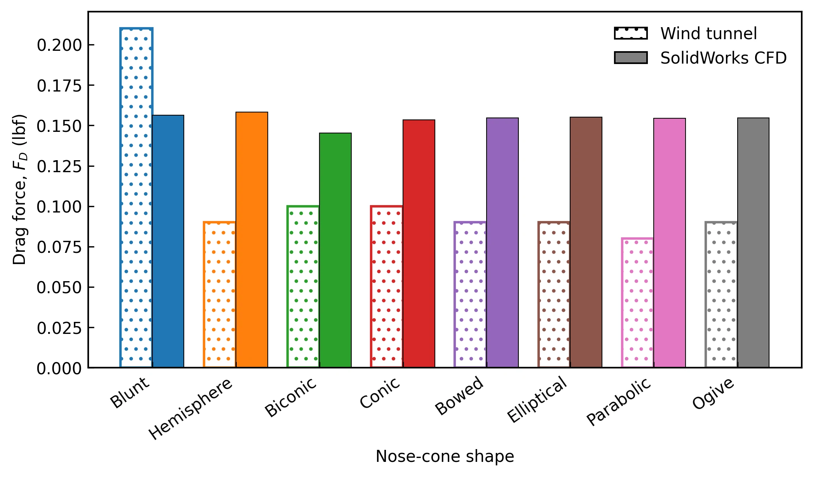

01 / 04Rocket Nose Cone Aerodynamics
Designed eight nose shapes, ran CFD, and analyzed wind-tunnel results to investigate the gap between experiment and simulation.
INDIVIDUAL ROLECAD, CFD, data acquisition and report
OUTCOMEStreamlined shapes measured less drag than the blunt reference. The CFD and experiment did not agree closely.
Explore project